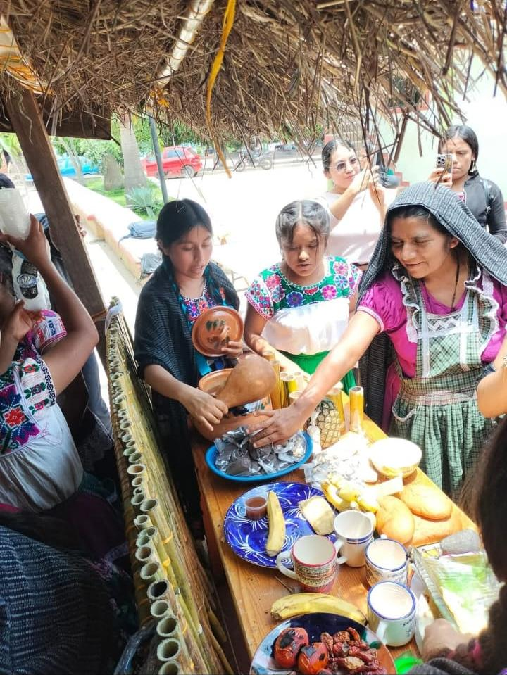
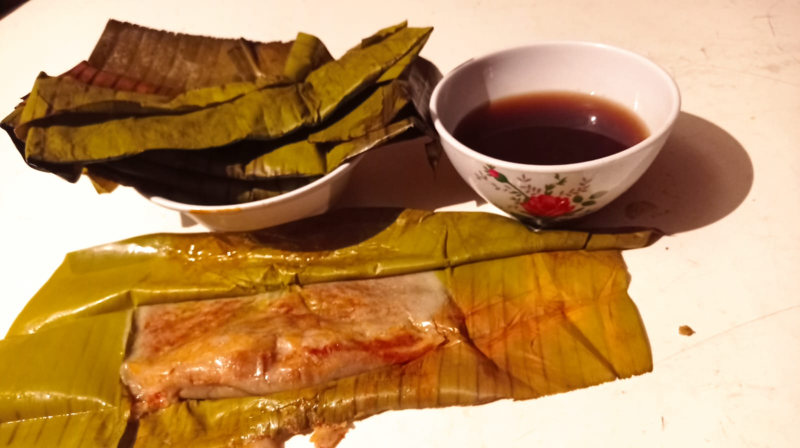
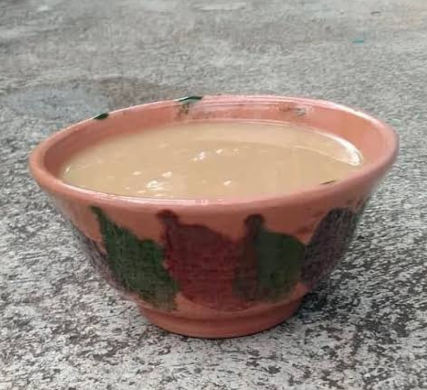
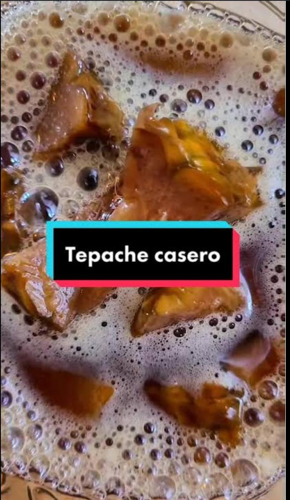
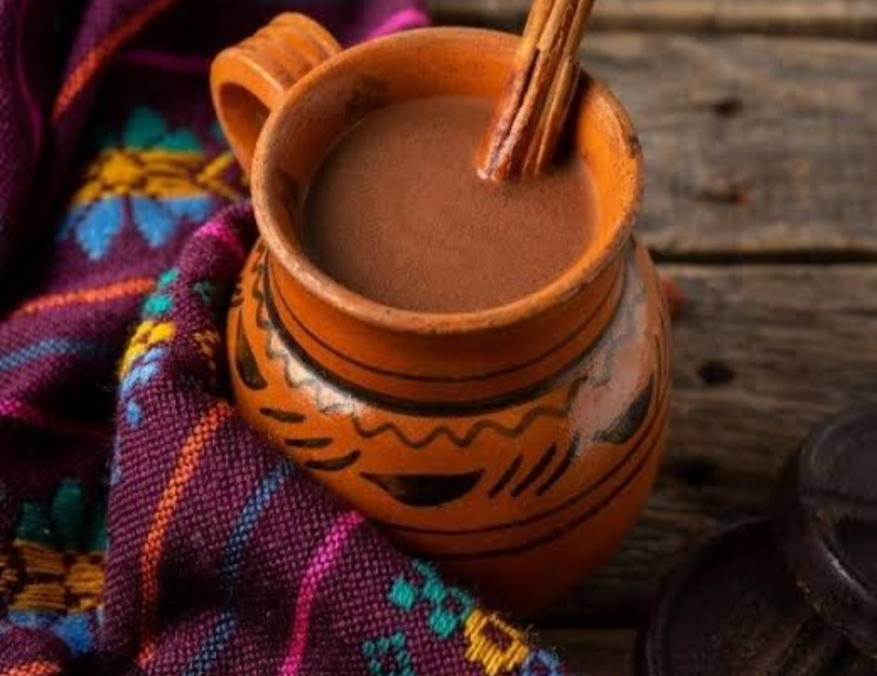

Gastronomía de San Lorenzo Texmelucan
En San Lorenzo Texmelucan, la gastronomía es una parte fundamental de la cultura y las tradiciones de la comunidad. Sus platillos típicos, preparados con ingredientes frescos y recetas transmitidas de generación en generación, representan la identidad y el orgullo de sus habitantes. Cada comida refleja la historia, las costumbres y el trabajo de las familias que conservan los sabores auténticos de la región, convirtiendo a la gastronomía en una de las expresiones más importantes de su patrimonio cultural. Entre sus platillos y bebidas destacan los siguientes:


Cocina el pollo en caldo aromático con cebolla, ajo y laurel hasta que esté tierno.
Licúa chiles, tomates, ajo y cebolla con especias y chocolate.
Agrega la mezcla al caldo de pollo y cocina a fuego medio.
Cocina verduras tradicionales en el caldo reservado y luego incorpora el pollo.
Ajusta el sazón con sal y, si deseas, añade cilantro fresco picado.
Recuerda que el mole es un plato que requiere paciencia y atención a los detalles para lograr la textura y sabor perfectos.
|
Mole de pollo
Platillo tradicional de la región.
|

|
Armado de los tamales:
Colocar una hoja de maíz sobre la mesa con la parte interior hacia arriba.
Extender una porción de masa en el centro de la hoja.
Añadir una cucharada del relleno de pollo con salsa.
Doblar los lados de la hoja hacia el centro y luego doblar la parte inferior hacia arriba. Amarrar con pabilo si es necesario
Cocción
Colocar los tamales en una vaporera con suficiente agua sin que toque los tamales.
Cocer al vapor durante aproximadamente 1 a 1.5 horas, revisando que la masa esté firme y se despegue fácilmente de la hoja
Tamales de Pollo
Preparados con masa y pollo.

Como preparar unos tamales de chepil:
Para preparar tamales de chepil, sigue estos pasos sencillos:
Remoja las hojas de totomoxtle en agua durante al menos 10 minutos o toda la noche.
Mezcla la masa con manteca de cerdo y caldo de pollo, y luego con sal y el Royal.
Envuelve la masa en las hojas de totomoxtle y cúbrelas con un poco de queso.
Cocina los tamales al vapor durante aproximadamente 1 hora, hasta que la masa esté cocida y firme.
Despegue los tamales de la hoja y sirven.
Estos tamales son un símbolo de la rica gastronomía oaxaqueña y son perfectos para celebraciones y reuniones familiares.
Tamales de Chepil

Para preparar tamales de elote, sigue estos pasos sencillos:
Licúa los granos de elote con azúcar y agua hasta obtener una mezcla homogénea.
Envuelve la masa en hojas de maíz y colócala en una vaporera.
Cocina a fuego medio durante 50-60 minutos, asegurándote de que siempre haya agua en el fondo.
Deja reposar los tamales antes de servirlos con crema, queso o chocolate caliente.
Estos tamales son perfectos para desayunos o celebraciones tradicionales, y son una forma de conectar con las tradiciones.
Tamales de Elote
Hechos con maíz tierno.

Receta básica para preparar frijoles de olla
Para preparar frijoles de olla, sigue estos pasos básicos:
Limpieza: Limpia los frijoles de cualquier suciedad o material extraño.
Cocción: Cocina los frijoles en una olla grande con cebolla, ajo y agua hasta que estén tiernos.
Condimentación: Agrega epazote y chile serrano, y cocina hasta que los frijoles estén blandos.
Sal y manteca: Incorpora sal y manteca, y cocina hasta que los frijoles estén bien sazonados.
Servir: Sirve los frijoles en un tazón con su propio caldo, como una comida independiente o como guarnición.
Recuerda que el tiempo de cocción puede variar según el tipo de frijol y su frescura.
Frijol de Olla
Alimento básico de la comunidad.

salsa de chinche
Para preparar una salsa de chinche, sigue estos pasos:
Mezcla chinches con tomates y chiles costeños asados a las brasas.
Ajo y chinches.
Machaca en un molcajete hasta formar una salsa espesa.
Sazona con ajo y chile para equilibrar la acidez y el picante.
Agrega chinches para un sabor vibrante y equilibrado.
Esta salsa es un manjar tradicional en la cocina oaxaqueña y se puede disfrutar de varias formas, como en guacamole, arroz, frijoles, mole de olla, etc.
Salsa de Chinche

La salsa de chicatanas se prepara tostando las hormigas, asando jitomates y chiles, licuando o moliendo los ingredientes, y finalmente sofriendo la mezcla con cebolla y aceite para obtener una salsa espesa y aromática.
Salsa de Chicatana
Dulces Tradicionales

Mango de dulce
1. Pela y corta los mangos maduros-firmes en gajos o cubos.
2. Hierve agua con azúcar hasta hacer un almíbar ligero. Agrega canela si quieres.
3. Echa el mango al almíbar hirviendo y baja a fuego medio-bajo.
4. Cocina 30-45 min moviendo poco, hasta que el mango se vea transparente y el almíbar espeso.
5. Ponle jugo de limón al final y apaga.
6. Enfría y guarda en frascos.
Dulce de Mango

Dulce de chilacayota:
1. Pela la chilacayota, quita semillas y hebra. Córtala en cubos grandes.
2. Déjala en agua con cal 3 a 4 horas. 1 cucharada de cal por litro de agua.
3. Enjuaga muy bien los cubos con agua limpia varias veces hasta quitar toda la cal.
4. Pon la panela troceada en la olla con la chilacayota escurrida. Usa 500g a 700g de panela por cada kilo de chilacayota. No agregues agua, la chilacayota suelta la suya.
5. Ponle canela en raja si quieres. Tapa y cocina a fuego muy bajo.
6. Cocina 2 a 3 horas sin mover. La panela se va a derretir sola y se hace el almíbar con el jugo de la chilacayota.
7. Está listo cuando los cubos se ven cristalinos, dorados y el almíbar está espeso.
8. Apaga y deja enfriar en la misma olla
dulce de Calabaza
Bebidas Tradicionales

Atole de panela:
Disuelve la masa*: En 1 litro de agua fría desbarata 150g de masa de maíz con las manos hasta que no queden grumos. Cuela si quieres que quede más fino.
2. Derrite la panela: En una olla aparte pon 1 cono de panela con 1 taza de agua y canela en raja. Hierve hasta que se deshaga toda.
3. Mezcla: Vacía el agua con masa a la olla de la panela ya derretida. Mueve bien.
4. Cocina: Pon a fuego medio y no dejes de mover con cuchara de madera o molinillo.
5. Espesa: Hierve 10-15 min moviendo siempre. Está listo cuando espesa y ya no sabe a masa cruda. Si queda muy espeso agrega más agua caliente.
6. Sirve: Quita la canela y sirve caliente.
Atoles

Preparación del líquido: En una olla, mezcla el agua con el piloncillo y la canela; calienta hasta que el piloncillo se disuelva. Retira del fuego y deja enfriar a temperatura ambiente
Mezcla de ingredientes: Coloca las cáscaras de piña en un frasco de vidrio o cerámica, añade el líquido endulzado, los clavos y cualquier especia opcional. Mezcla suavemente
Fermentación: Cubre el frasco con un paño limpio o gasa, asegurando que pueda respirar. Deja reposar a temperatura ambiente (20-25°C) durante 2 a 5 días, dependiendo de la temperatura y del nivel de fermentación deseado. Revisa diariamente, retirando espuma o moho si aparece.
Colado y almacenamiento: Una vez alcanzado el sabor deseado (ligeramente ácido y dulce), cuela el líquido para separar los sólidos. Guarda el tepache en botellas y refrigera para detener la fermentación
Tepache

Cómo se prepara el Chocolate:
1. Calienta el agua: Pon 1 litro de agua en una olla a fuego medio.
2. Agrega el chocolate: Cuando el agua esté caliente, echa 1 tablilla de chocolate de mesa partido en trozos.
3. Disuelve: Mueve con molinillo o batidor constantemente hasta que se deshaga todo el chocolate.
4. Saca espuma: Cuando suelte el hervor, baja el fuego. Bate fuerte con el molinillo entre las palmas 1-2 minutos para que haga espuma.
5. Sirve: Vacíalo desde arriba para que caiga con espuma y sírvelo bien caliente.
Chocolate
Productos de la Región